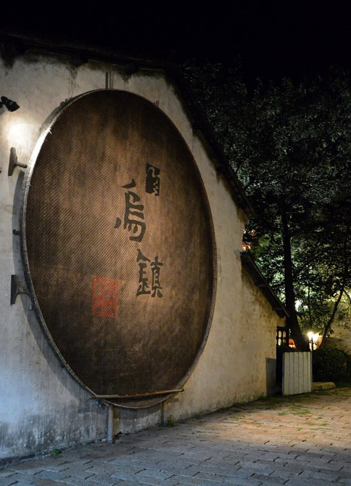

- 有个诗人叫聂鲁达，他说，当华美的叶片落尽，生命的脉络才历历可见，是不是我们的爱 情，也要到霜染青丝时光逝去时，才能像北方冬天的枝干一般，清晰勇敢坚强。
- 我们都曾醉在水乡，任年华似水，似水年华。
- 今天是哪一天?昨天的明天，明天的昨天。
- 他不认识命运，却为它日夜工作。他认识了爱，却陷入一场虚无的等待。
- 生命中不会有什么奇迹，曾经停留在我眼光中的你的注视，那只是一次偶然… 生命里是没有奇迹的，那片滑落在无风世界里的枯叶，也只是一个偶然… 我们所有的奇迹，就是我向你走去，你向着我走来。
- 你来了。对，我来了。我知道你会来。我知道你知道。你要走了。对，我要走了。我知道你会走。我知道你知道。
- 我面前是妖娆的夜色，我的眼中看到却是寂静的水乡。
- 黄昏总是会让我觉得很无助，好像一切都要结束了，可是新的开始又毫无踪迹。
- 有些事，你把它藏到心里，也许还更好，等时间长了，也就变成了故事。
- 这里的美，是令人迷失又令人绝望的美，是年华逝去时留下的痕迹。
-
我们相爱过吗？
相爱过。
多久？
好像是一瞬间。
那剩下的呢？
剩下的是无尽的挣扎与惦念。
-
你说男人是因为什么而长大的?
大概是因为女人吧!
那女人呢？
女人? 那该问你才对啊!
女人，是因为爱上一个男人而长大的。所以爱情是可以让人成长的。 但是令彼此成长的两个人,却无法常驻在一起。
你是说我们吗？
对，是我们，但不止是我们。
- 早晨喝酒醉一天，天天喝酒醉一生。
- 快乐与快乐之间是没有距离的，人总是活在等待快乐和想念快乐的过程中。
- 他们在渴求的是什么？他们不是在要对方，他们在要自己。我们在所有经过的爱情当中，都不是看到的对方，只是看到了自己。
- 给你写了很多信，可是我没有你的地址，那个邮箱，也没有记忆。
- 当你开始学会去等待生命的时候，你发现你等来的不是任何一个机会，也不是等来任何一次改变。你开始发现你等来的一个人是你自己，他开始从远远的地方向你走来，你开始学会了，用一种方式来了解你自己。
◎ 乌镇